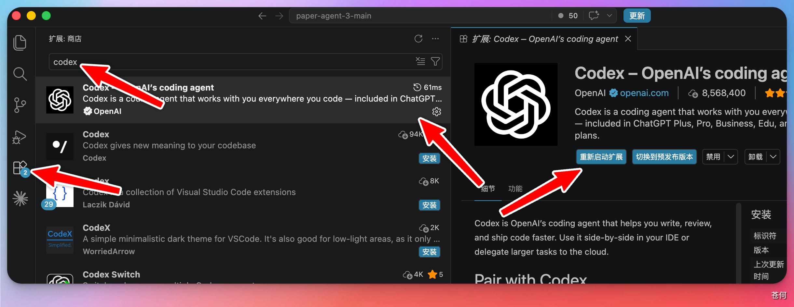
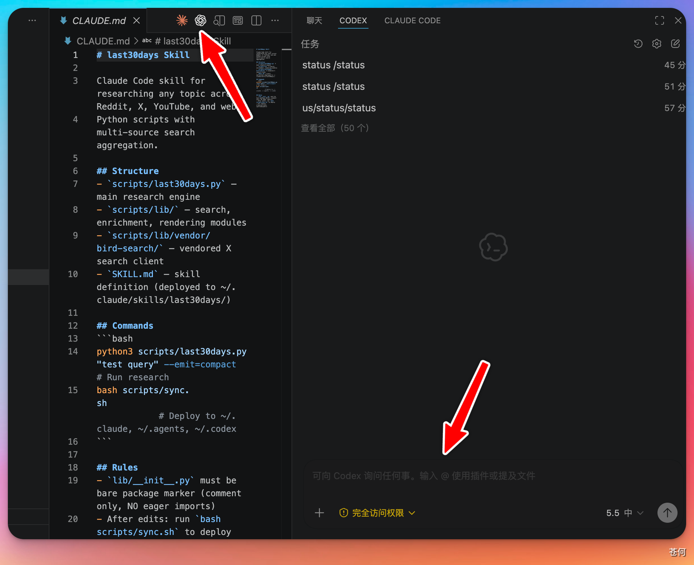
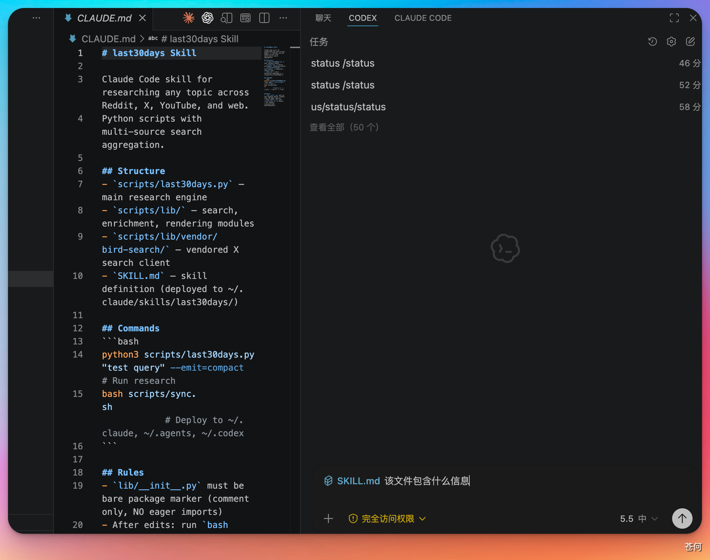

14 CLI 与 IDE
在 VS Code 中使用 Codex
本章介绍如何在 VS Code 代码编辑器中安装 Codex 插件，并通过插件完成开发任务。相比桌面 App，在 VS Code 中使用 Codex 可以更直接地看到文件目录结构和修改前后的对比，适合习惯在编辑器里工作的开发者。
来源：CodexGuide 原文。原页面标注 MIT Licensed；原图与说明按页面内容保留。
在 VS Code 中使用 Codex
💡 最后核对 官方资料最后核对日期：2026-05-27。本章以 VS Code 为例演示插件安装与基本用法，操作界面以实际版本为准。
本章介绍如何在 VS Code 代码编辑器中安装 Codex 插件，并通过插件完成开发任务。相比桌面 App，在 VS Code 中使用 Codex 可以更直接地看到文件目录结构和修改前后的对比，适合习惯在编辑器里工作的开发者。
安装 Codex 插件
打开 VS Code，点击左侧边栏的「扩展」图标，在搜索框中输入 Codex，选择第一个结果，点击「安装」即可。
💡 提示 这里安装的是 OpenAI 官方发布的 ChatGPT 插件，其中集成了 Codex 的对话与代码辅助能力。

打开插件对话窗口
安装完成后，在 VS Code 中打开任意一个项目文件，右上角会出现 ChatGPT 的图标。点击该图标，右侧边栏就会展开 Codex 的对话窗口。


开始使用
对话窗口打开后，直接输入需求，Codex 就会开始辅助完成开发任务，用法与 Codex 桌面 App 基本一致。
使用 @ 指定文件：
在对话框中输入 @ 后选择具体文件，Codex 会直接定位到该文件进行分析或修改，比让它全局搜索更快、更准确。建议在任务目标明确时优先使用 @ 指定相关文件。

App 与 VS Code 插件怎么选
| Codex 桌面 App | VS Code 插件 | |
|---|---|---|
| 适合场景 | 多任务管理、Skills、Automations | 边写代码边调用，贴近编辑器工作流 |
| 文件结构可见性 | 需要切换界面 | 直接在编辑器里查看 |
| 修改前后对比 | 独立查看 | 可结合编辑器 diff 查看 |
| 推荐用户 | 需要并行任务或插件协作 | 日常编码开发者 |
根据自己的使用习惯选择即可，两者可以配合使用。